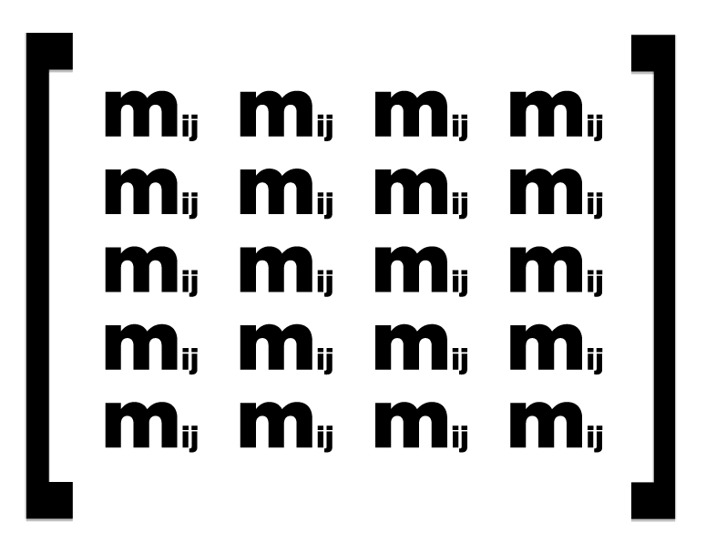
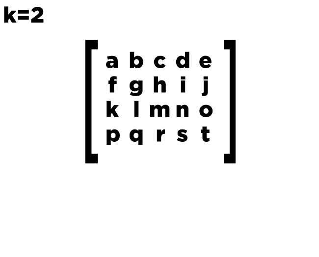

Иногда при работе с матрицами нам необходимо приводить их к верхнетреугольному виду.
Для того, чтобы матрица была приведена корректно, можно воспользоваться алгоритмом Доджсона, который сохраняет целочисленность.
Итак, есть матрица . Для данной матрицы алгоритм работает следующим образом.
Положим, и (элементы матрицы), ; тогда для положим
Данную формулу из книги Акритаса можно представить и по-другому:
Можно заметить, что деление в данном случае никак не влияет на целочисленность (доказывается по индукции). Это можно увидеть на примере вычисления одного из элементов.
Пусть мы имеем матрицу:
На первой итерации ( ) мы получим следующий результат:
Здесь фактически деления не происходит: для этого мы указали "нулевой" элемент, равный единице.
Вычислим, к примеру, элемент :
Таким образом, каждый элемент подматрицы можно без остатка разделить на .
Однако стоит учитывать, что элемент диагонали может быть нулевым. Чтобы избежать деления на ноль, воспользуемся методом пузырька для замены строки с нулевым элементом в нужном нам столбце на первую встретившуюся строку с ненулевым элементом в соотвествующем столбце.
Следующая анимация поможет понять алгоритм перестановки:
Также для наглядности далее следует анимация, показывающая, какие элементы используются в перерасчёте текущего элемента:
Ниже представлена программа, приводящая заданную матрицу к верхнетреугольному виду.